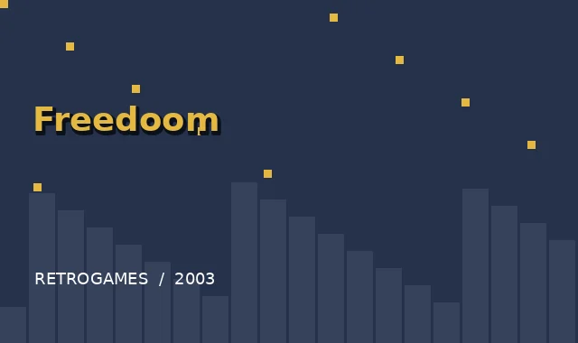
Freedoom
Otwarta strzelanka z poziomami, potworami i bronią w duchu klasycznego Dooma.
POBIERZ Z OFICJALNEJ STRONY ↗Licencja projektu: BSD. Sprawdź warunki konkretnego wydania.Klasyczne gry i projekty w duchu retro. Każda pozycja ma rok, ilustrację, krótki opis i odnośnik do oficjalnej strony pobierania.
Ilustracje są autorskimi grafikami poglądowymi, nie oryginalnymi zrzutami ekranu. Pliki gier znajdują się na stronach ich twórców.

Otwarta strzelanka z poziomami, potworami i bronią w duchu klasycznego Dooma.
POBIERZ Z OFICJALNEJ STRONY ↗Licencja projektu: BSD. Sprawdź warunki konkretnego wydania.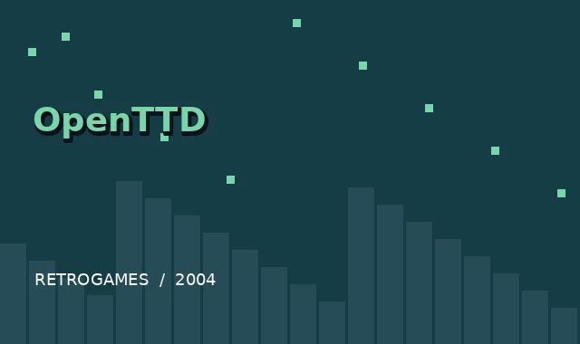
Buduj linie kolejowe, lotniska i sieci transportowe, rozwijając własne imperium przewozowe.
POBIERZ Z OFICJALNEJ STRONY ↗Licencja projektu: GPL-2.0. Sprawdź warunki konkretnego wydania.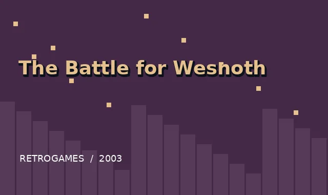
Turowe bitwy, kampanie fabularne i armie ludzi, elfów oraz innych fantastycznych ras.
POBIERZ Z OFICJALNEJ STRONY ↗Licencja projektu: GPL. Sprawdź warunki konkretnego wydania.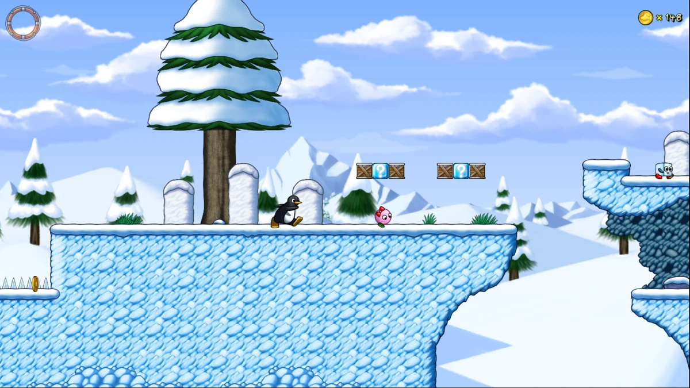
Skacz przez lodowe krainy, zbieraj monety i omijaj przeciwników w klasycznej platformówce 2D.
POBIERZ Z OFICJALNEJ STRONY ↗Licencja projektu: GPL / licencje zasobów. Sprawdź warunki konkretnego wydania.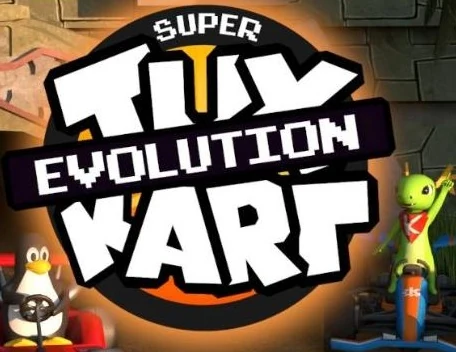
Kolorowe wyścigi gokartów z trasami, bonusami i rozgrywką dla wielu graczy.
POBIERZ Z OFICJALNEJ STRONY ↗Licencja projektu: GPL / licencje zasobów. Sprawdź warunki konkretnego wydania.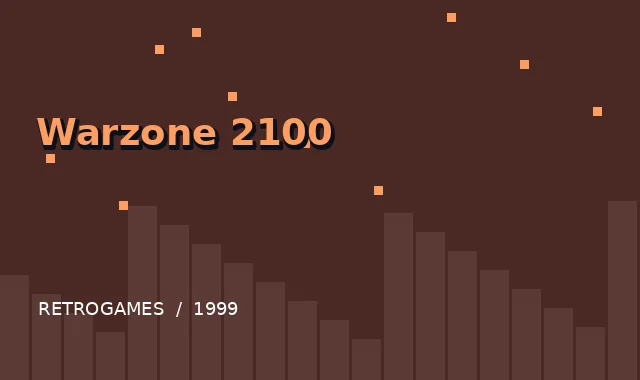
Postapokaliptyczna strategia czasu rzeczywistego z projektowaniem własnych pojazdów.
POBIERZ Z OFICJALNEJ STRONY ↗Licencja projektu: GPL. Sprawdź warunki konkretnego wydania.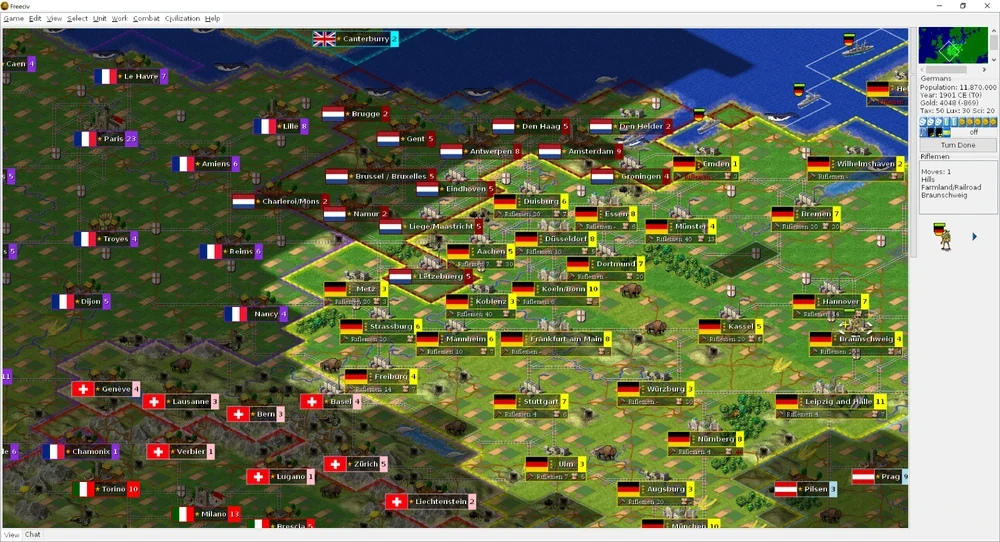
Rozwijaj cywilizację od starożytności do ery kosmicznej, prowadząc dyplomację i wojny.
POBIERZ Z OFICJALNEJ STRONY ↗Licencja projektu: GPL. Sprawdź warunki konkretnego wydania.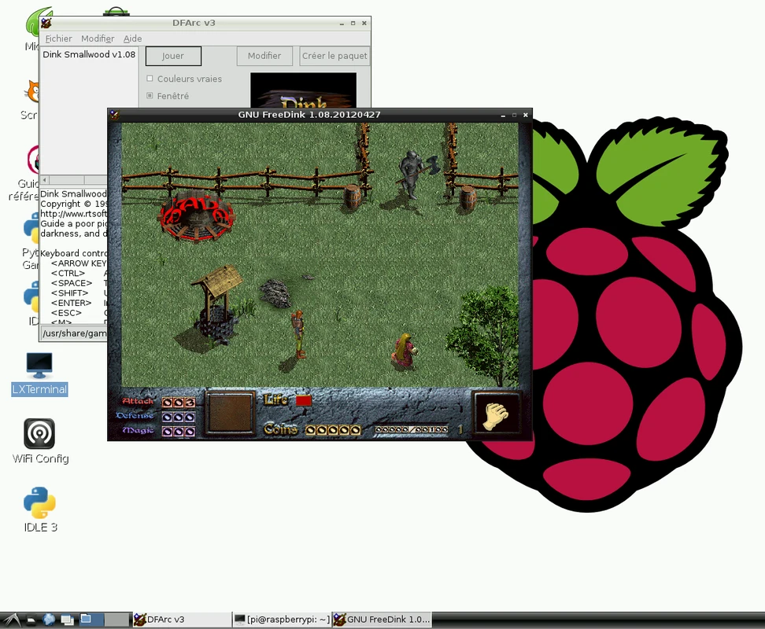
Humorystyczna przygodowa gra RPG nawiązująca do klasycznego Dink Smallwood.
POBIERZ Z OFICJALNEJ STRONY ↗Licencja projektu: GPL / licencje zasobów. Sprawdź warunki konkretnego wydania.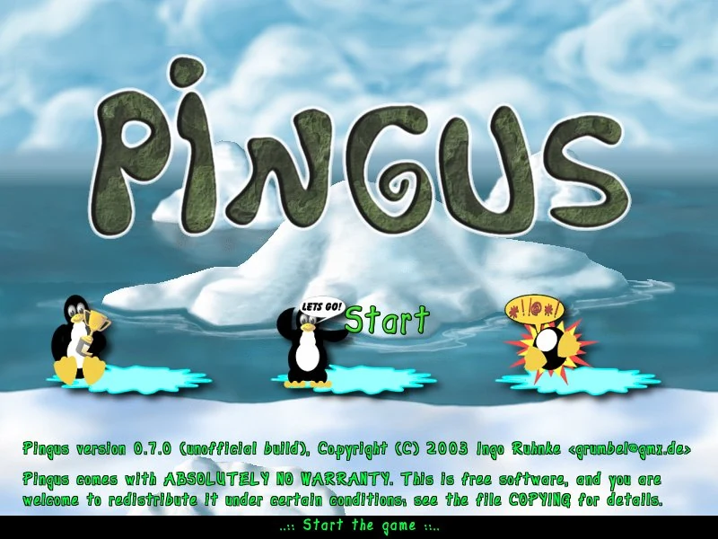
Przeprowadź grupę pingwinów przez pełne pułapek poziomy, przydzielając im zadania.
POBIERZ Z OFICJALNEJ STRONY ↗Licencja projektu: GPL. Sprawdź warunki konkretnego wydania.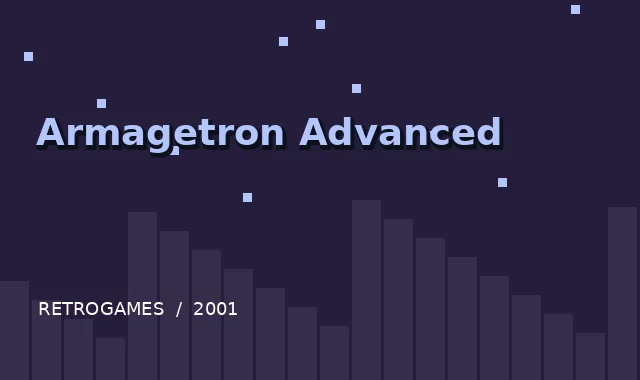
Pojedynki świetlnych motocykli na arenie inspirowanej filmowym światem TRON.
POBIERZ Z OFICJALNEJ STRONY ↗Licencja projektu: GPL. Sprawdź warunki konkretnego wydania.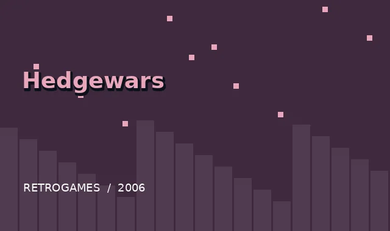
Turowe pojedynki drużyn jeży z arsenałem zwariowanych broni.
POBIERZ Z OFICJALNEJ STRONY ↗Licencja projektu: GPL / licencje zasobów. Sprawdź warunki konkretnego wydania.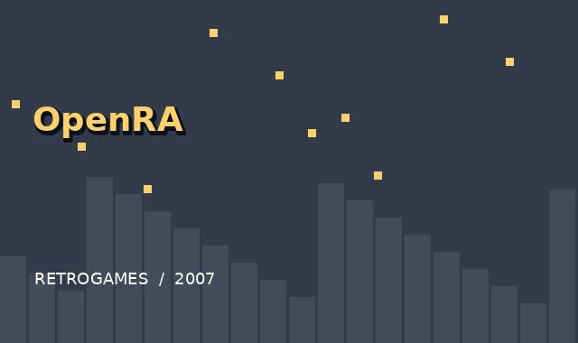
Otwartoźródłowy silnik klasycznych strategii czasu rzeczywistego z nowoczesnymi funkcjami.
POBIERZ Z OFICJALNEJ STRONY ↗Licencja projektu: GPL; zasoby gier osobno. Sprawdź warunki konkretnego wydania.